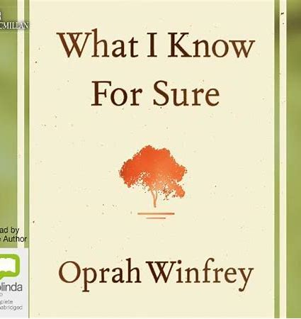
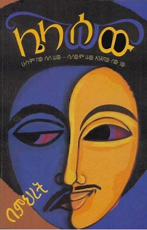

-

Home
Shoot for the moon even when you miss it you will land among the stars


| Title | Author | Favorite Character | Memorable Quote |
|---|---|---|---|
| The Alchemist | Paulo Coelho | Santiago | "And, when you want something, all the universe conspires in helping you to achieve it." |
| Atomic Habits | James Clear | N/A | "You do not rise to the level of your goals, you fall to the level of your systems." |
| What I Know for Sure | Oprah Winfrey | N/A | "The more you praise and celebrate your life, the more there is in life to celebrate." |
| ሌላ ሰው | Dr Mihret Debebe | ሚስጥር | "ጊዜ ከፈጣሪ ጋር የማይፈታው ችግር የሚፈጠረው፤ ለጊዜ ጊዜን መስጠት ሲሳነን ብቻ ነው" |
| Becoming | Michelle Obama | N/A | "Now I think it's one of the most useless questions an adult can ask a child—What do you want to be when you grow up? As if growing up is finite. As if at some point you become something and that's the end." |
The Alchemist

"The Alchemist" is a renowned novel written by Brazilian author Paulo Coelho. It tells the enchanting story of Santiago, a young shepherd who embarks on a journey of self-discovery and fulfillment. Throughout the pages of this inspiring book, Coelho weaves a tale that resonates with readers, imparting profound lessons along the way.
One lesson I took from "The Alchemist" is the importance of following one's dreams and listening to the desires of the heart. Santiago's pursuit of his personal legend, his ultimate purpose in life, encourages us to identify our own dreams and have the courage to pursue them relentlessly. Coelho's narrative reminds us that the universe conspires to help those who are committed to their dreams, and that through perseverance and faith, we can overcome obstacles and achieve our true destinies.
Another significant lesson is the idea that the journey itself is as valuable as the destination. Santiago's encounters with various individuals and his experiences along his quest highlight the transformative power of embracing the present moment. Coelho invites readers to savor the beauty of the present, to be open to new experiences, and to trust in the process of life. "The Alchemist" reminds us that the lessons and growth we gain on our journey are often just as, if not more, important than the ultimate goal we seek.
Atomic Habits

"Atomic Habits" is a compelling read that highlights the extraordinary impact of small habits on our lives. James Clear's insights and practical advice serve as a roadmap for developing positive behaviors and achieving long-term success. By embracing the power of atomic habits, we can unlock our potential, cultivate lasting change, and ultimately live a more fulfilling and purpose-driven life.
One of the key lessons I took from "Atomic Habits" is the concept of habit stacking. Clear emphasizes the importance of leveraging existing habits to create new ones. By identifying a current behavior and pairing it with a desired habit, we can seamlessly integrate positive actions into our lives. This approach allows us to tap into the power of momentum and make lasting changes more effectively. Whether it's tying a new habit to something as simple as brushing our teeth or incorporating it into our morning routine, habit stacking enables us to build a strong foundation for personal transformation and continuous improvement.
What I know for sure
"What I Know for Sure" is a profound and uplifting book by Oprah Winfrey that encapsulates her personal reflections and life lessons. Through a collection of heartfelt essays, Oprah shares her wisdom, experiences, and the truths she has come to embrace throughout her journey.
One of the core lessons I took from "What I Know for Sure" is the importance of gratitude. Oprah highlights the transformative power of cultivating a grateful mindset and appreciating the present moment. By acknowledging and expressing gratitude for the blessings in our lives, we can shift our perspective, invite more positivity, and find joy in the simplest of things.
Another key takeaway from the book is the significance of embracing authenticity and staying true to oneself. Oprah encourages readers to honor their own unique journeys, embrace their passions, and live with purpose and integrity. She emphasizes the importance of listening to our inner voice, following our intuition, and making choices that align with our values and aspirations.
ሌላ ሰው
"Lela Sew," a novel written by the renowned Ethiopian psychiatrist Dr. Mihret Debebe, captivated me with its exploration of human psychology. As I immersed myself in the pages of this psychological fiction, I encountered a rich tapestry of characters and their intricate relationships. The central theme of the book revolves around a psychologist who grapples with a profound dilemma between his dedication to his country and his family responsibilities.
One of the core lessons I took from "Lela Sew" is the understanding of human nature and the intricacies of the human psyche. Through the characters' experiences and interactions, I delved into the depths of personality, motivations, and the complexities of human behavior. This exploration served as a reminder of the vast spectrum of emotions and desires that shape our actions and relationships. It highlighted the importance of empathy and compassion as we navigate the intricacies of our own minds and the minds of others.
Becoming

Through her heartfelt storytelling and genuine vulnerability, Obama shares her journey of self-discovery, personal growth, and the lessons she learned along the way. One of the most significant lessons I took from "Becoming" is the importance of embracing our own voice and identity. Obama's authenticity and unwavering commitment to staying true to herself, despite the challenges and expectations she faced, inspired me to reflect on my own journey of self-acceptance. Her story reminded me that it is through embracing our unique stories and backgrounds that we can truly make a difference in the world.
Another valuable lesson I gleaned from the book is the power of resilience and determination. Obama's unwavering belief in herself and her ability to overcome obstacles resonated deeply with me. Her story serves as a reminder that setbacks and failures are not roadblocks but opportunities for growth and learning. Through her example, I have been encouraged to persevere in the face of adversity and to never be afraid to pursue my dreams.